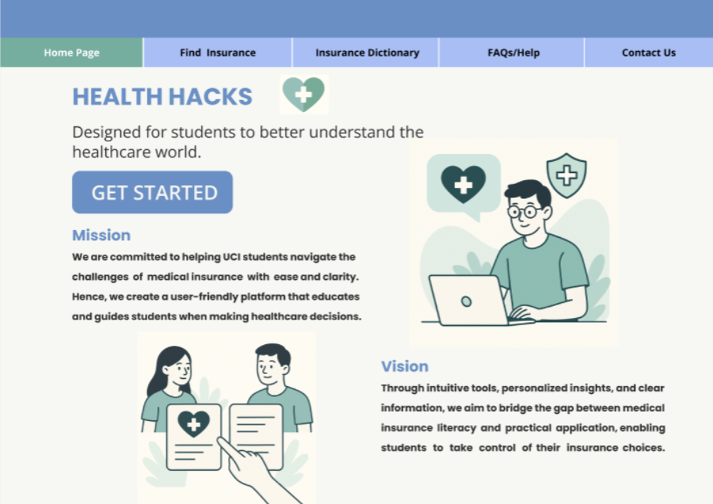
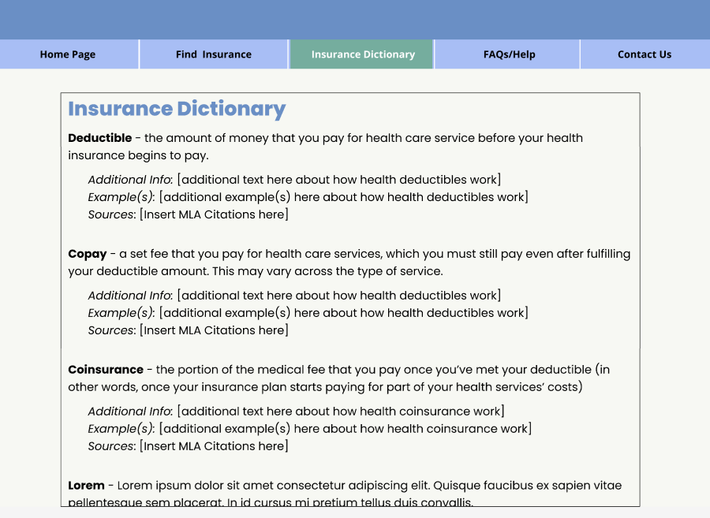
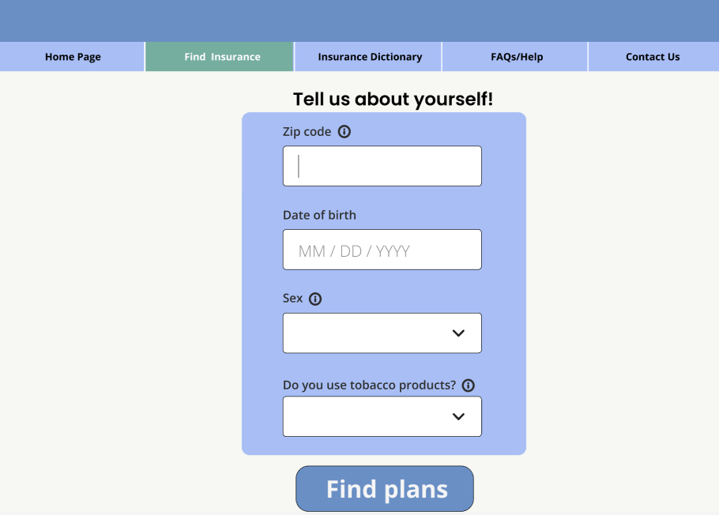
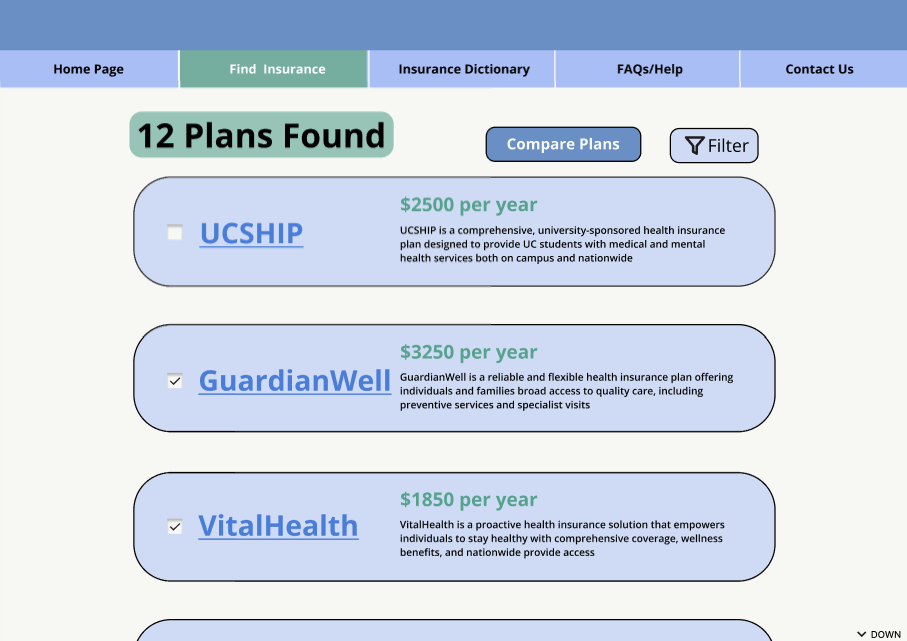
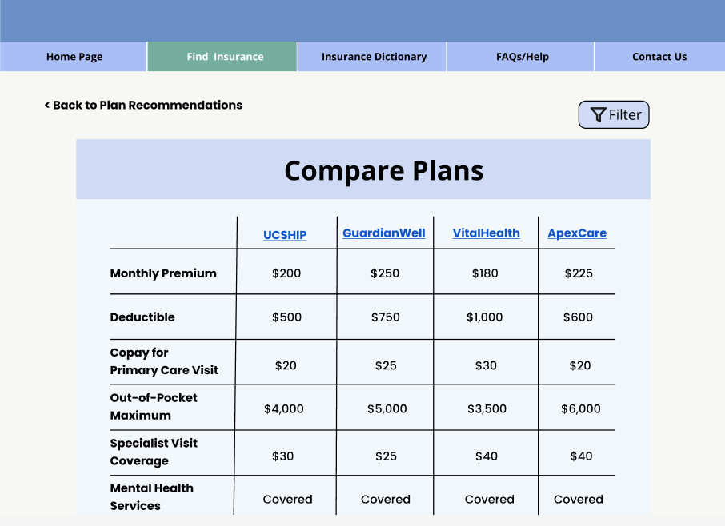
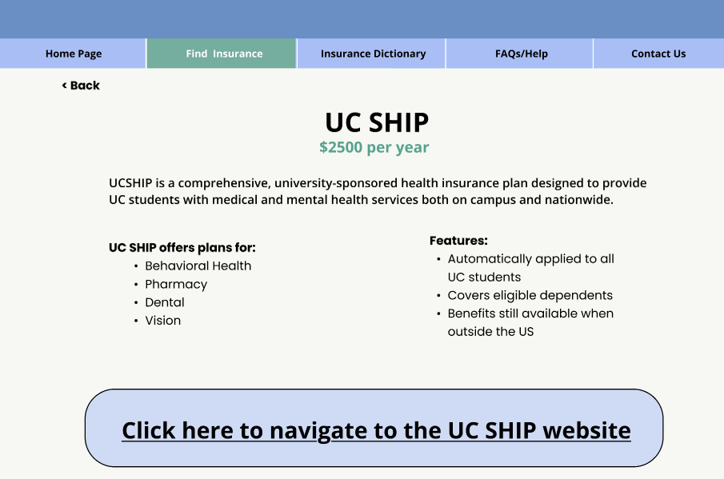

UX Research · Product Design · Education
A student-centered platform that transforms confusing insurance jargon into clear, accessible guidance — so students can make informed healthcare decisions without anxiety.
This project was completed as part of a class assignment in collaboration with five other students. Our goal was to design a digital solution that helps UC Irvine students better understand their health insurance options and make more informed healthcare decisions — without feeling overwhelmed or pressured.
When students arrive at college, many of them encounter health insurance for the first time completely alone. Some can't stay on a parent's plan due to geographic distance restrictions. Some have never had to think about it at all. The result is a group of people making real financial and medical decisions with almost no foundational knowledge — and the assumption that their only option is whatever the university offers.
That last part is especially important: a lot of students default to their school's plan not because it's the best fit, but because it's the only one they know about. The problem isn't just confusion — it's invisible options.
Our competitive analysis revealed a consistent pattern: most health insurance platforms assume users already understand insurance basics, or push them toward enrollment before they feel confident. This raised our core question — how do students actually experience and understand health insurance today?

Competitive analysis of existing health insurance platforms
Students lack foundational knowledge of basic insurance concepts
Complex terminology creates confusion and emotional anxiety
Users feel overwhelmed and disengage from existing platforms
Early data requests reduce trust and spike drop-off rates
I conducted user research and competitive analysis to identify key pain points, contributed to ideation and storyboard creation, designed mid- to high-fidelity prototypes, and participated in iterative user testing rounds.
The instinct when designing a comparison tool is to get users to the comparison screen as fast as possible. We pushed back on that. If a student doesn't know what a deductible or copay is, showing them a side-by-side plan comparison is useless — it's just a table of numbers they can't interpret. The education had to come before the personalisation.
The biggest pivot in our design process came when we realised we needed a glossary built directly into the platform. Our initial flows only had the comparison screens, but every time we tested, users were opening new tabs to look up terms they didn't understand. That friction was breaking the experience and defeating the entire purpose. An in-platform insurance dictionary meant students never had to leave the site to understand what they were reading — and it made every other part of the flow more usable as a result.
Rather than overwhelming users upfront, the flow prioritises learning, clarity, and gradual progression — grounded in the insight that students don't just need access to information, they need guidance in understanding it.

User flow — guiding students from initial confusion to confident decision-making
Before moving into interface design, we explored how students might experience the platform over time through storyboards — focusing on the user journey without being constrained by layout decisions.

An education-first approach — users learn key concepts before exploring plan options

A guided comparison flow supporting decision-making after foundational knowledge is established
Mid- to high-fidelity prototypes emphasised visual hierarchy, step-by-step guidance, and approachable language — each screen designed to reduce cognitive load while building user confidence.
Home page

Insurance dictionary & personalised form


Plan recommendations & comparison


Plan detail

Users responded positively to the structured flow, but testing revealed areas where terminology and context could be further simplified. We refined language, improved navigation clarity, and adjusted content organisation to better align with how students actually think about insurance.
This project demonstrated how thoughtful UX design can make complex systems more accessible. By shifting the focus from enrollment to education, we created an experience that gives students agency over their healthcare decisions.
It also reinforced the importance of designing for real-world comprehension — especially in high-stakes domains where clarity directly impacts user well-being.
The education-first approach was the right call and I'd make it again. But if I'm being honest about the current version of Health Hacks — the UI is too simple. The visual design doesn't match the weight of the problem we were trying to solve. The branding is basic, the layout is functional but not memorable, and the overall aesthetic undersells the value of what's actually there.
I'm actively reworking it. A redesign is in progress that addresses the branding, the layout hierarchy, and the visual language from the ground up. It's not ready to show yet — but the fact that I'm rebuilding it rather than moving on is the clearest sign I can give that I take the craft seriously, not just the process.